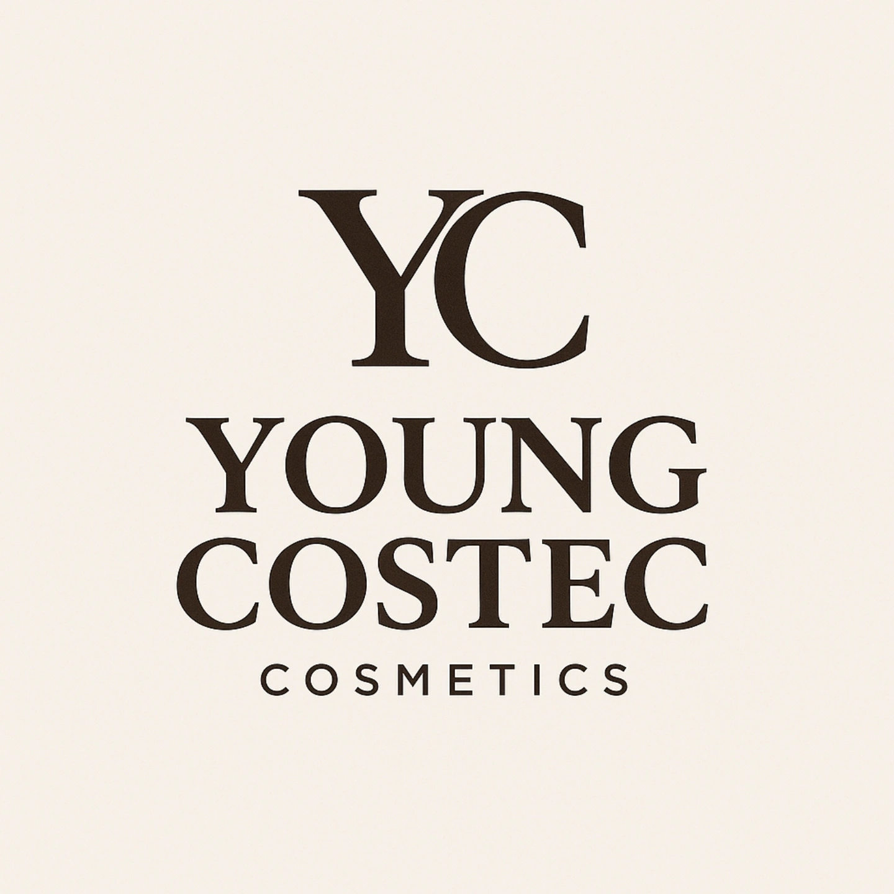

PREMIUM DAILY COSMETICS
YOUNG COSTEC COSMETICS
피부가 편안하게 받아들이는 데일리 케어를 위해, 담백한 포뮬러와 고급스러운 사용감을 한 화면에 담았습니다. 현재 상품 이미지는 브랜드 로고를 더미 이미지로 활용한 시안입니다.

Ivory tone, deep brown typography, calm cosmetic mood.
New essentials for a quiet glow
상품은 총 9개로 구성했습니다. 좌우 버튼 또는 터치 스크롤로 넘겨볼 수 있고, 각 카드를 누르면 상세 페이지로 이동합니다.
Designed for skin that prefers softness.
아이보리 베이스와 짙은 브라운 로고가 주는 차분함을 살려, 브랜드가 전문적이면서도 편안하게 보이도록 구성했습니다. 상세 페이지, 브랜드 소개, 이벤트 배너로 이어지기 좋은 구조입니다.
01 CALM절제된 여백과 낮은 대비로 편안한 첫인상을 만듭니다.
02 PREMIUM세리프 타이포와 둥근 이미지 프레임으로 고급감을 줍니다.
03 SHOP READY상품 이미지와 가격 정보가 들어갈 자리를 미리 잡았습니다.
Brand journal
화장품 브랜드 홈페이지에서 자주 쓰이는 스토리형 콘텐츠 영역입니다. 이벤트, 성분 이야기, 사용 루틴 콘텐츠로 교체할 수 있습니다.